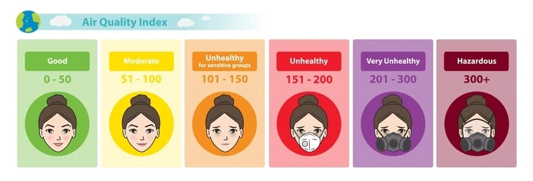

visualizing invisible pollutants in the air
AQI, the Air Quality Index, is used to represent the Air Quality of the day.
Concentrations are converted to a 0–500 scale.

Every day, the AQI is decided by the maximum of 6 pollutants:
the one that dominates is called the driver pollutant.
Recap: There are 6 major pollutants: CO, O3, NO2, PM2.5, PM10, SO2.
The Daily AQI is the MAXIMUM across all 6 — the driver pollutant.
Let's investigate — what pollutants are polluting Atlanta's air?
O3 and PM2.5 are major driver pollutants in Atlanta.
(scroll up to re-check!)
What about seasonal trend?
Have you ever felt the air fresher during winter or summer?
Maybe worse during pollen season?
Summer has worse AQI than winter!
And Final Thing:
Which city has a better AQI?
And where should I go?
You see some cities have crazy spikes while some are more chill.
But does that necessarily mean that city is better?
What if that city's major driver pollutant is the one you are specifically sensitive to?
Is it a consistent pattern or temporal trend?
Interact with our kiosk or read our data comics for more use cases. :))